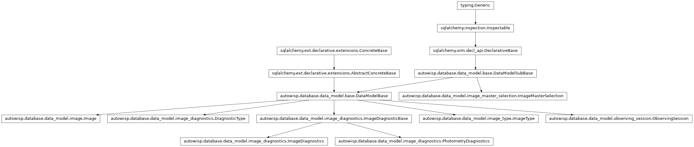

autowisp.diagnostics.image_counts module
Class Inheritance Diagram

How many images each series would draw, read from the project database.
The series table’s question, asked before anything is read or evaluated:
which sessions, image types, channels and photometries a quantity could be
bound to, and how many images a binding would draw. Answered by counting
diagnostic rows alone – in image_diagnostics, or in
photometry_diagnostics for a diagnostic recorded per photometry –
never by evaluating an expression, since there is a table row per observing
session and image type and evaluating per row would be work proportional to
the whole image collection. Reading the values of a series is
autowisp.diagnostics.expression_series.
- autowisp.diagnostics.image_counts._count_images(rows, required, split_by, db_session, *, by_reference=False, references=())[source]
Count images with required of rows each, per series.
The shared half of the three counting questions below, which differ in which rows count, how many of them an image owes, and what the result varies over besides the session and the type: the channel – and with it, possibly, a photometric reference – the photometry, or neither.
Counting rows rather than distinct diagnostics is sound for all three, because each makes a row stand for one requirement: the unique index of each table admits no duplicate, and rows of several photometries that stand for one are merged by
_recorded(). An image satisfying n of what was asked for contributes exactly n rows to its group. Joining the image’s binding in a row’s channel keeps that so, there being at most one.- Parameters:
rows – What
_recorded()returned: the rows that count.required (int) – How many rows an image must have.
split_by (tuple) – The columns of rows the result varies over, which an image then has to satisfy the requirement within:
(),("channel",)or("photometry_id",).db_session – An active SQLAlchemy database session.
by_reference (bool) – Whether the result varies over the photometric reference as well: the one each image is bound to in the channel of its rows, so only when split by channel. An image bound to none there is not counted.
references –
(channel, photref)pairs an image must also be bound to, ascount_images_with_channels()takes them.
- Returns:
- One tuple per series, holding the session label, the
session id, the image type, the split_by columns, the photref’s
MasterFileid where by_reference, and the count.
- Return type:
- autowisp.diagnostics.image_counts._recorded(per_image, per_photometry, columns=(), *, distinct=False)[source]
Return the diagnostic rows the counts are made of, as one subquery.
The rows of
image_diagnosticsper_image keeps, and those ofphotometry_diagnosticsper_photometry keeps, side by side. Each table is filtered before the union rather than after it, so each branch is a probe of its own table’s indexes, whatever a database makes of a filter over a union.- Parameters:
per_image – The condition, over
image_diagnosticsand thediagnostic_typeit is joined to, keeping the rows that count;Nonewhere none does. At least one of the two conditions must be given.per_photometry – The same, over
photometry_diagnostics.columns – The columns carried besides
image_idanddiagnostic_id: those the count varies over, and no others, since which columns a row has decides which rows are alike.distinct (bool) – Whether rows alike in every column carried are one row: those of one diagnostic in several photometries, where the photometry is not carried and any of them will do.
- Returns:
The subquery, with
image_id,diagnostic_idand columns.
- autowisp.diagnostics.image_counts.count_images_per_photometry(needed, db_session)[source]
Count images holding all of needed, per (session, type, photometry).
What a photometry column may be bound to: the photometries a quantity could be read in, and how many images each would draw – the photometry’s counterpart of
count_images_with_all(). Which channels the reads are in is for the channel columns to choose, so an image counts in a photometry where it records every one of needed, in whichever channels. Only the names ofphotometry_diagnostic_names()are recorded per photometry, so no other can be among them.- Parameters:
needed (set) – Diagnostic names that must all be recorded in the same photometry for an image to count. Empty means nothing is read per photometry, and there is nothing to count.
db_session – An active SQLAlchemy database session.
- Returns:
- One tuple per photometry of each session and image type,
(session_label, session_id, image_type, photometry, count), the photometry an id asfit_magnitudesrecords it.
- Return type:
- autowisp.diagnostics.image_counts.count_images_with_all(needed, db_session, *, by_reference=False)[source]
Count images holding all of needed, per (session, type, channel).
What a slot may be bound to: the channels a quantity could be read in, and how many images each would draw. Deliberately spans every observing session, that being what the series table lists – so there is no one session to anchor it to, and its cost is proportional to the images carrying the diagnostic. That is a standing limit rather than something an index could remove: enumerating the sessions is the question being asked.
The photometry is not among what the result varies over: it is chosen apart from the channel, and
count_images_per_photometry()counts its options. So a diagnostic recorded per photometry is there when it is there in any photometry of the channel.- Parameters:
needed (set) –
DiagnosticTypenames that must all be recorded for an image to count, in the same channel. An empty set means no quantity constrains the result, which only happens when every quantity istime_quantity; nothing is plottable then.db_session – An active SQLAlchemy database session.
by_reference (bool) – Whether to count per photometric reference too, for a slot reading a diagnostic
fit_magnitudesproduces, whose values mean something only within one reference: the one each image is bound to in the channel. An image bound to none there is not counted.
- Returns:
(session_label, session_id, image_type, channel, count)tuples, with the photref’s
MasterFileid before the count where by_reference.
- Return type:
- autowisp.diagnostics.image_counts.count_images_with_channels(requirements, db_session, references=())[source]
Count images holding every diagnostic read, per series.
What a binding actually draws, once the channels and photometries are chosen – the exact question, where
count_images_with_all()andcount_images_per_photometry()answer the looser ones that fill the dropdowns. The difference is a line of SQL and the whole of the meaning: an image counts when its rows cover every read between them, so one requirement may be met in R and another in B, or one in aperture 0 and another in aperture 2, which is what a quantity comparing channels or photometries needs.- Parameters:
requirements –
(diagnostic_name, channel, photometry)reads that must all be recorded for an image to count, the photometry an id for a diagnostic recorded per photometry andNonefor one recorded per image. Deduplicated here, since the two axes of one plot may read the same diagnostic in the same channel and photometry. Empty means nothing constrains the result.db_session – An active SQLAlchemy database session.
references –
(channel, photref)pairs an image must also be bound to, the photref aMasterFileid, as a series key’sreference_pairsgives them. What restricts a series to the images fit against its references restricts its count the same way.
- Returns:
(session_label, session_id, image_type, count)tuples.No channel or photometry among them: the binding names those, so they are not what the rows vary over.
- Return type: